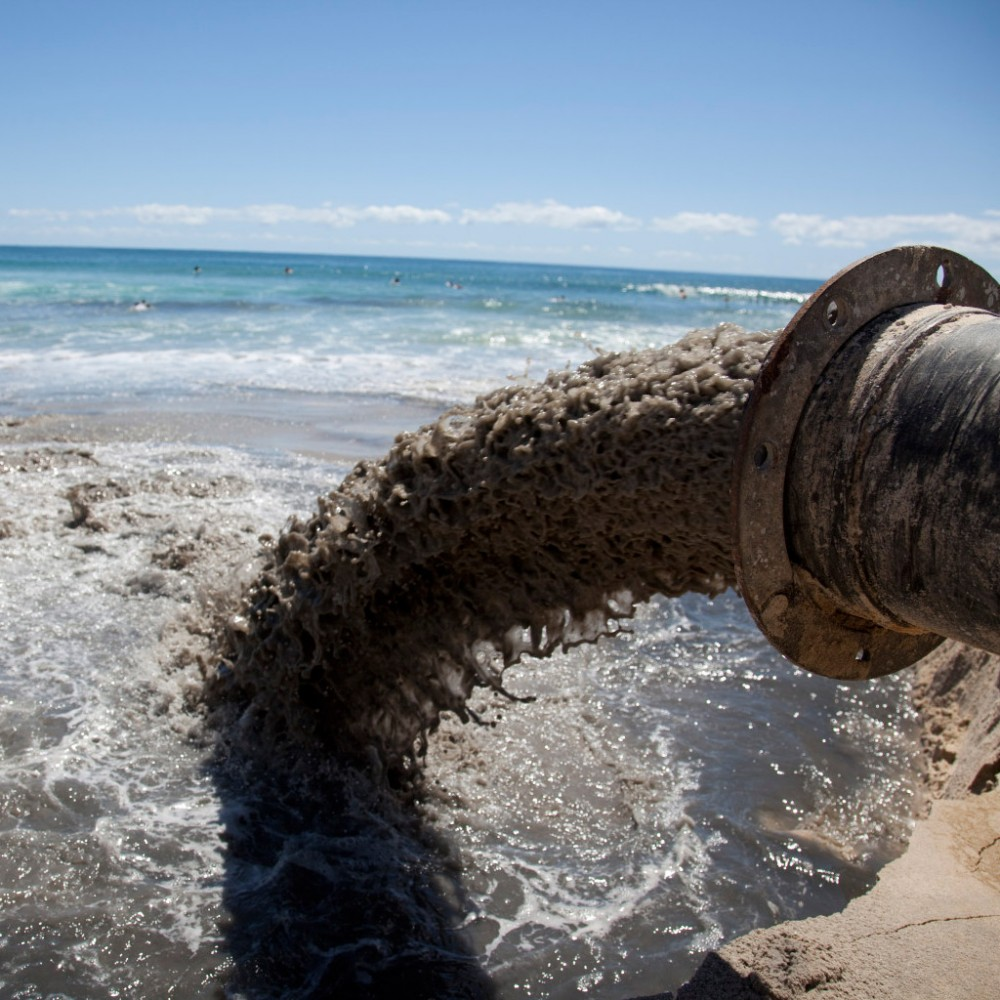
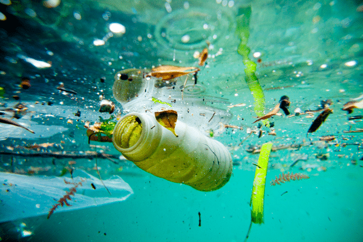
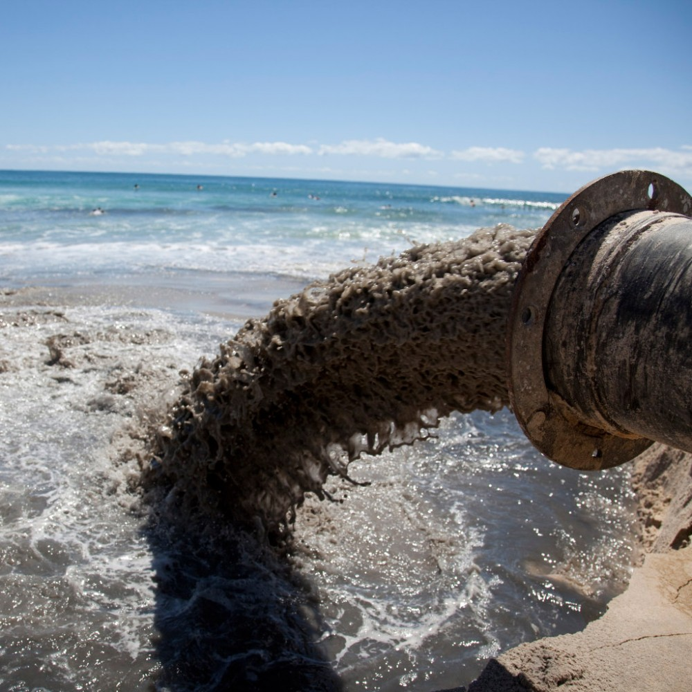
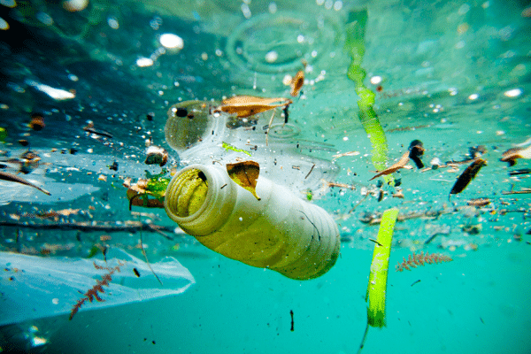

Water is ensential to life, All organism's contain it, drink it or live in it, Plants and animals require relativly pure water if the water contains toxic chemicals or harmful micro-organisms it could be deadly. Water Pollution kills large quantity of fish, birds and other animals in some cases killing everything in an affected area.The major water pollutants are chemical, biological, and physical materials that lessen the water quality. Water pollution can be separated into several different catagories:
Groundwater: When rain falls andseeps deep into the earth, filling the cracks and crevices and porous spaces of an aquifer it becomes Groundwater, one of the leaast visable but most important natural resources. Groundwater gets contaminated when pollutants from pesticides and fertilizers to waste leeched from landfills and septic tanks make their way into an aquifer rendering it unsafe for human use. Once polluted, an aquifer may be unusable for decades or even thousands of years. Groundwater can also spread contamination far from the origional pollution source as it gets into streams and lakes and oceans.
Surface water : When toxic substances enter lakes, streams and rivers they get dissolved or lie suspended in the water. This results in the pollution of the water when this happens the quality of the water deteriorates, affecting aquatic eco systems. Sewage from cities and industrial waste are the most common sources of pollutants. Agricultural run-off that drains from fields into rivers is another major pollutanst as it contains herbicies and pesticides. This water which ultimately ends up in our households is often highly contaminated and carries disease causing microbes.
Ocean water: 80% of ocean pollution originates on land wheter along the coast line or further inland. Contaminates such as chemicals, fertilizers, heavy metals and plastics are carried from farms and factories and cities by streams and rivers into bays and estuaries and from there into the ocean. the ocean absorbs as much as a quarter of man made emissions.
 

There are also a large number of marie animals that are currently endangered with some of the most endangered being:
The protection of these species and all marine life is essential to maintiaing healthy oceans and eco-systems which in turn will help to create a healthy planet to the benefit of all living creatures.
Coral reefs are the epicenter of immense amounts of Bio-diversity and are a key player in the survival of entire eco-systems. They provide various marine animals with food, protection and shelter which keep generations of species alive. Unfortunately because of human impact on coral reefs, these eco-systems are becoming increasinly degraded and in need of conservation. Coral bleaching occurs when colorful algae that live in corals die or are expelled from corals under stress. The algae live symbiotically with coral polyps, providing them with nutrients and oxygen. If the algae die and are not replaced, the corals will also die.